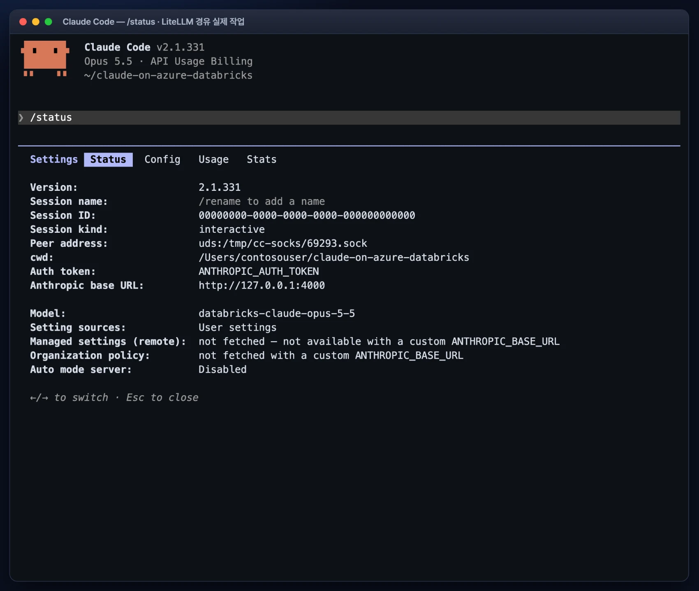
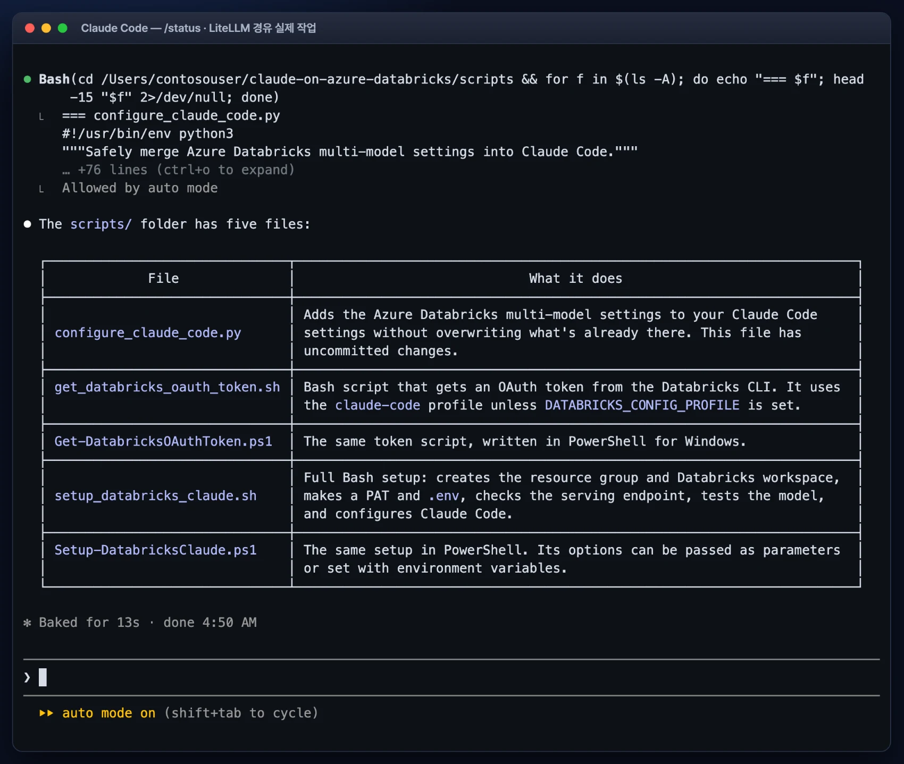

🎬 영상은 화면에 들어오면 자동 재생됩니다(무음) · ⏩는 빨리 감기 · 이미지를 클릭하면 크게 볼 수 있어요.
언제 LiteLLM을 사이에 두나요?
개인이 빠르게 붙일 때는 직접 연결이 가장 단순합니다. 팀·조직이 키·모델·로그를 한곳에서 관리하려면 LiteLLM을 둡니다.
| 직접 연결 | LiteLLM 경유 (이 페이지) | |
|---|---|---|
Claude Code ANTHROPIC_BASE_URL | Databricks /serving-endpoints/anthropic | LiteLLM URL |
| Claude Code 토큰 | Databricks PAT / OAuth | LiteLLM key (사용자별 virtual key 권장) |
| Databricks credential 위치 | 사용자 PC마다 | LiteLLM 서버에만 |
| 모델 이름 | databricks-claude-* | 같은 이름을 alias로 유지 → picker 설정 변경 불필요 |
| 이럴 때 | 개인 검증, 가장 단순 | 중앙 인증·예산·로그·여러 provider 통합 |
준비물
Databricks 접속 정보 3가지와 LiteLLM을 실행할 곳이 필요합니다.
| 준비 | 내용 | 비고 |
|---|---|---|
| Databricks 접속 정보 | Workspace URL · Token(PAT) · Model ID | 직접 연결 가이드의 1~2단계에서 만든 값을 그대로 사용 (PAT scope: model-serving + Read + Write) |
| LiteLLM 서버 | 이미 있으면 URL과 key만 확인 | 실습: Docker 이미지 ghcr.io/berriai/litellm:main-stable (LiteLLM 1.110.3) |
| Docker | docker version | 실습: Colima (macOS). Colima는 홈 디렉터리 아래 경로만 컨테이너에 마운트합니다 |
| Claude Code | claude --version | 실습: 2.1.331 |
서버에 Databricks credential 넣기
Databricks 토큰은 LiteLLM 서버 프로세스의 환경변수로만 주입합니다. config.yaml·이미지·Git에 쓰지 않습니다.
| 용도 | 인증 방식 | 설정할 환경변수 |
|---|---|---|
| 운영 | OAuth M2M (권장) | DATABRICKS_CLIENT_ID, DATABRICKS_CLIENT_SECRET |
| 빠른 검증 (이 실습) | PAT | DATABRICKS_API_KEY |
| 공통 | workspace 주소 | DATABRICKS_API_BASE=https://<workspace-host>/serving-endpoints |
# 서버 프로세스(컨테이너)의 환경변수로 전달 — 4단계의 docker run -e 옵션
DATABRICKS_API_BASE=https://<workspace-host>/serving-endpoints
DATABRICKS_API_KEY=<databricks-pat>model_list에 Databricks Claude 추가
model_name은 Claude Code가 보내는 이름, litellm_params.model은 LiteLLM이 Databricks로 보낼 backend 이름입니다.
model_list:
# 기존 모델은 그대로 유지합니다.
- model_name: databricks-claude-opus-5
litellm_params:
model: databricks/databricks-claude-opus-5
api_base: os.environ/DATABRICKS_API_BASE
- model_name: databricks-claude-opus-4-8
litellm_params:
model: databricks/databricks-claude-opus-4-8
api_base: os.environ/DATABRICKS_API_BASE
- model_name: databricks-claude-sonnet-5
litellm_params:
model: databricks/databricks-claude-sonnet-5
api_base: os.environ/DATABRICKS_API_BASE
- model_name: databricks-claude-sonnet-4-6
litellm_params:
model: databricks/databricks-claude-sonnet-4-6
api_base: os.environ/DATABRICKS_API_BASE
- model_name: databricks-claude-haiku-4-5
litellm_params:
model: databricks/databricks-claude-haiku-4-5
api_base: os.environ/DATABRICKS_API_BASE
general_settings:
master_key: os.environ/LITELLM_MASTER_KEY # 기존 설정은 변경하지 않습니다- 기존
model_list항목과general_settings·router_settings·callback·budget 설정은 그대로 두고 필요한 항목만 병합합니다. - 인증정보는 2단계의 환경변수에서 읽으므로 YAML에
api_key를 넣을 필요가 없습니다. model_name에[1m]을 붙이지 않습니다. Claude Code가databricks-claude-opus-5[1m]을 선택해도[1m]을 떼고 LiteLLM에 보냅니다.- workspace에서 호출할 수 없는 모델은 등록하지 마세요.
서버 (재)시작 → 모델 목록 확인실행 검증
Before: 모델이 없는 기존 서버(data: []) → After: credential과 설정을 넣고 재시작하면 Databricks 모델 5개가 보입니다.
# (1) 기존 서버: master key만 있는 config.yaml
LITELLM_KEY="sk-$(python3 -c 'import secrets; print(secrets.token_urlsafe(24))')"
docker run -d --name litellm -p 127.0.0.1:4000:4000 \
-v "$PWD/config.yaml:/app/config.yaml" \
-e LITELLM_MASTER_KEY="$LITELLM_KEY" \
ghcr.io/berriai/litellm:main-stable --config /app/config.yaml --port 4000
until curl -sf http://127.0.0.1:4000/health/liveliness > /dev/null; do sleep 2; done; echo "LiteLLM is up"
curl -s http://127.0.0.1:4000/v1/models -H "Authorization: Bearer $LITELLM_KEY" | python3 -m json.tool # → "data": []# (2) Databricks 추가: 3단계의 config.yaml로 교체 + credential 환경변수 → 재시작
export DATABRICKS_HOST="https://<workspace-host>"
export DATABRICKS_TOKEN="<databricks-pat>"
docker rm -f litellm
docker run -d --name litellm -p 127.0.0.1:4000:4000 \
-v "$PWD/config.yaml:/app/config.yaml" \
-e LITELLM_MASTER_KEY="$LITELLM_KEY" \
-e DATABRICKS_API_BASE="$DATABRICKS_HOST/serving-endpoints" \
-e DATABRICKS_API_KEY="$DATABRICKS_TOKEN" \
ghcr.io/berriai/litellm:main-stable --config /app/config.yaml --port 4000
until curl -sf http://127.0.0.1:4000/health/liveliness > /dev/null; do sleep 2; done; echo "LiteLLM is up"
curl -s http://127.0.0.1:4000/v1/models -H "Authorization: Bearer $LITELLM_KEY" \
| python3 -c 'import sys,json; [print(m["id"]) for m in json.load(sys.stdin)["data"]]'data: []) → Databricks 추가·재시작 → 모델 5개 표시 (대기 구간은 ⏩)45초/health/liveliness가 응답하고/v1/models에databricks-claude-*5개가 나열됨
LiteLLM 경유 API 검증실행 검증
Claude Code가 보내는 것과 같은 Anthropic Messages 요청을 LiteLLM key로 직접 보내 봅니다.
curl -sS http://127.0.0.1:4000/v1/messages \
-H "Authorization: Bearer $LITELLM_KEY" \
-H "anthropic-version: 2023-06-01" \
-H "content-type: application/json" \
-d '{"model":"databricks-claude-opus-5","max_tokens":64,"messages":[{"role":"user","content":"Reply with exactly: LITELLM OK"}]}' \
| python3 -c 'import sys,json; d=json.load(sys.stdin); print("type :", d["type"]); print("stop_reason:", d["stop_reason"]); print("text :", "".join(b.get("text", "") for b in d["content"]))'/v1/messages → Databricks → type: message15초- 응답 최상위
type이message text에LITELLM OK(LiteLLM · Databricks · alias가 모두 연결됨)
Claude Code 설정에서 값 두 개만 교체실행 검증
기존 ~/.claude/settings.json의 ANTHROPIC_DEFAULT_* picker 값은 그대로 두고 아래 두 값만 바꿉니다.
| 키 | 직접 연결 (이전) | LiteLLM 경유 (이후) |
|---|---|---|
ANTHROPIC_BASE_URL | https://<workspace-host>/serving-endpoints/anthropic | https://<litellm-host> (실습: http://127.0.0.1:4000) |
ANTHROPIC_AUTH_TOKEN | Databricks PAT / OAuth token | LiteLLM key (Databricks token이 아님) |
python3 - <<'PY'
import json, pathlib
p = pathlib.Path.home() / ".claude" / "settings.json"
d = json.loads(p.read_text())
d["env"]["ANTHROPIC_BASE_URL"] = "http://127.0.0.1:4000" # 서버 주소 (/v1/messages 제외)
d["env"]["ANTHROPIC_AUTH_TOKEN"] = "<litellm-key>"
p.write_text(json.dumps(d, indent=2))
PY
grep -E 'ANTHROPIC_(BASE_URL|AUTH_TOKEN)' ~/.claude/settings.jsonsettings.json의 두 값만 교체 (이전 → 이후)11초CLAUDE_CODE_DISABLE_EXPERIMENTAL_BETAS=1은 Databricks·LiteLLM 조합을 검증하는 동안 유지합니다.permissions.deny의WebSearch도 그대로 둡니다.- 에디터로 직접 두 값을 고쳐도 됩니다. JSON 전체를 덮어쓰지 말고 키만 바꾸세요.
Claude Code에서 최종 확인실행 검증
Claude Code를 완전히 종료한 뒤 새 터미널에서 실행합니다.
claude --model "databricks-claude-opus-5[1m]" \
-p "Reply with exactly: CLAUDE CODE VIA LITELLM OK" \
--output-format jsonclaude -p → LiteLLM → Databricks 응답12초/status에서 base URL이 LiteLLM임을 확인하고, 파일을 읽는 실제 작업까지 실행14초

/status — Anthropic base URL이 LiteLLM 주소로 바뀜

/status의 Anthropic base URL이 LiteLLM URLclaude --model "databricks-claude-opus-5[1m]"테스트가 성공 (is_errorfalse,modelUsage에 선택한 alias)- 5개 모델(
opus-5·opus-4-8·sonnet-5·sonnet-4-6·haiku-4-5) 모두 성공 — 실제로 확인
요청이 LiteLLM을 지나갔는지 확인실행 검증
서버 로그에 Claude Code의 요청이 찍히면, 노트북 → LiteLLM → Databricks 경로가 맞는 것입니다.
docker logs litellm 2>&1 | grep "POST /v1/messages" | tail -n 6POST /v1/messages … 200 OK8초Claude Code가 보내는 /v1/messages?beta=true 요청이 모두 200 OK로 처리됩니다. 사용량·비용은 LiteLLM Admin UI(DB 사용 시)나 Databricks의 사용량 화면에서 확인할 수 있습니다.
문제 해결
증상 → 확인할 항목 순서입니다.
| 증상 / 메시지 | 확인할 항목 |
|---|---|
LiteLLM 401 | virtual/master key, Authorization header, key 만료·상태 |
Databricks backend 401 · 403 required scopes | 서버의 DATABRICKS_API_KEY(또는 M2M) 값, workspace host. PAT는 model-serving + Read + Write scope |
model not found | 요청 alias와 model_name의 정확한 일치, YAML/DB 중 실제로 적용되는 곳 |
/v1/models가 비어 있음 | 컨테이너를 재시작했는지, -v 경로가 맞는지 (Colima는 $HOME 아래만 마운트 — 아니면 config.yaml이 디렉터리로 잡힘) |
응답 text가 비고 stop_reason: max_tokens | max_tokens를 64 이상으로 (thinking 토큰이 먼저 소비됨) |
beta 관련 400 | Claude Code의 CLAUDE_CODE_DISABLE_EXPERIMENTAL_BETAS=1 |
| 설정을 바꿨는데 반영되지 않음 | store_model_in_db, Admin UI 값, 실제 --config 경로 |
| 기존 모델이 사라짐 | model_list 전체를 덮어썼는지, DB 설정 source |
403 … rate limit of 0 | Databricks 모델·리전, cross-Geo, 권한, 계정 용량 |
[1m] 모델을 찾지 못함 | LiteLLM alias에서 [1m] 제거, Claude Code 최신 버전 |
| Claude Code가 여전히 Databricks로 직접 감 | settings.json의 ANTHROPIC_BASE_URL, /status, shell 환경변수와의 우선순위(settings가 우선) |
정리
이 실습에서 만든 것만 지웁니다.
docker rm -f litellm # LiteLLM 컨테이너
rm -rf ./litellm-gateway # 실습용 config.yaml 폴더
# Claude Code 설정을 직접 연결 상태로 되돌리려면 백업(.bak.*)을 복원하거나
# 6단계의 두 값을 Databricks 값으로 다시 바꿉니다.
# Databricks 토큰 폐기: Settings → Developer → Access tokens → Revoke
az group delete --name "$RG" --yes --no-wait # 실습용 resource group (workspace 포함)